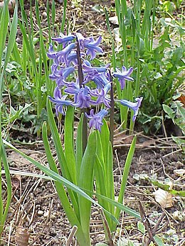

A jácint (Hyacinthus) a spárgavirágúak (Asparagales) rendjébe tartozó spárgafélék (Asparagaceae) családjának növénynemzetsége. Neve görög eredetű: a monda szerint az Apollo isten által legyőzött Hüakinthosz spártai király földre hullott véréből nőttek ki az első virágok. Hagymás, lágyszárú növények tartoznak ide. Korábban a liliomfélék (Liliaceae) családjába sorolták, majd az APG III-rendszer által már nem ismert jácintfélék típusnemzetségének tekintették. Közeli rokonai a vadjácint (Bellevalia) és a törpejácint (Hyacinthella).
A jácintok a mediterránium keleti területeitől Iránig és Türkmenisztánig őshonosak. Egyes kultúrákban az újjászületést szimbolizálják. A perzsa újévi (Norouz) ünnepségen (amit a tavaszi napéjegyenlőség idején tartanak) is jácinttal díszítik a haft szin (hét bűn) asztalát.
Dísznövényként használatos változatos alakjai egyetlen fajból, a kerti jácintból (Hyacinthus orientalis) származnak. Ez a 18. században annyira népszerű volt, hogy több mint 2000 fajtáját termesztették Hollandiában.
Mindössze három faj tartozik a nemzetségbe. Ezek:
Egyes botanikusok a H. litwonowii és H. transcaspicus fajokat a közeli rokon törpejácint Hyacinthella nemzetségbe sorolják, így náluk a Hyacinthus egyfajú.

Forrás: Wikipédia
Készítette: Dorina, Ildikó, Patrik